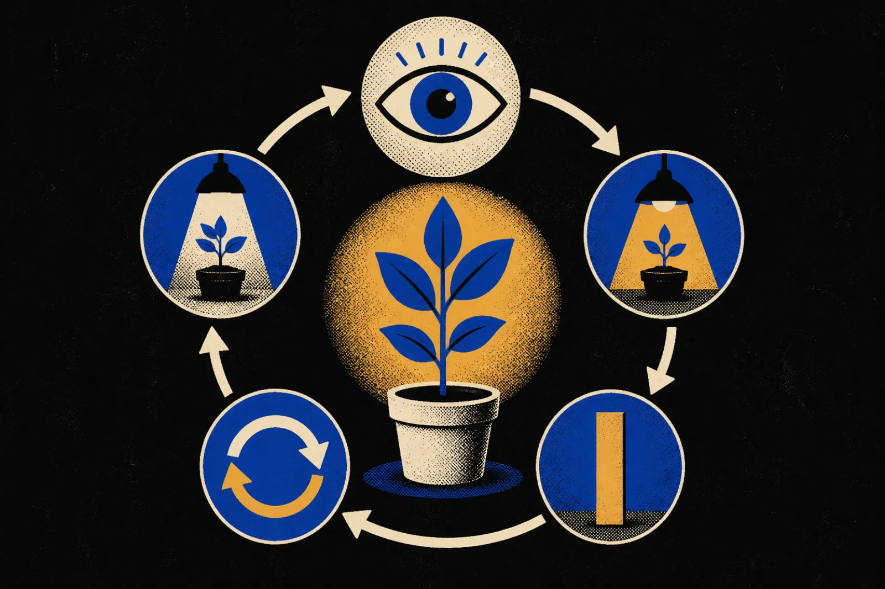

Notes from the rabbit holes.
Short notes from whatever I spent the week trying to understand. No fixed subject and no forced schedule.
Read the notes ↓Twelve ideas
The notebook.
12 notes / 57 minutes total
Neuroplasticity: How your brain changes with what you do
Why repeated behavior matters, why practice quality matters more, and why current ability is not always permanent ability.
Falsifiability: Don’t just ask if something is true
How asking what could prove an idea wrong turns vague beliefs into claims that can actually be tested.
Opportunity Cost: Every yes means saying no to something else
How every choice hides the value of the best alternative we leave behind.
The Dunning-Kruger Effect: Knowing what you don’t know
Why limited knowledge can make judging our own ability surprisingly difficult.
Dopamine and Motivation: Why do we want what we want?
Cues, anticipation, reward prediction, and the behaviors we train ourselves to pursue.
Confirmation Bias: The invisible filter in our thinking
Why we favor supporting evidence and how to search seriously for reasons we may be wrong.
How does research actually work?
Questions, hypotheses, study design, data, peer review, replication, and scientific consensus.
Correlation vs. Causation: Don’t confuse coincidence with cause
How confounding variables can make two related things look causally connected.
Game Theory: Your decision depends on other decisions too
How thinking about another person’s likely response changes your own best move.
The Scientific Method: Don’t guess. Test.
Observe, question, predict, experiment, measure, revise, and repeat.

The Pareto Principle: The 80/20 rule
Finding the small number of inputs that create most of the meaningful result.
What these ideas have in common
How choices, behavior, evidence, causes, strategy, and focus become a better mental toolkit.